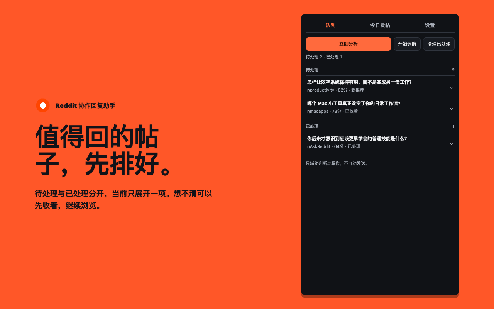
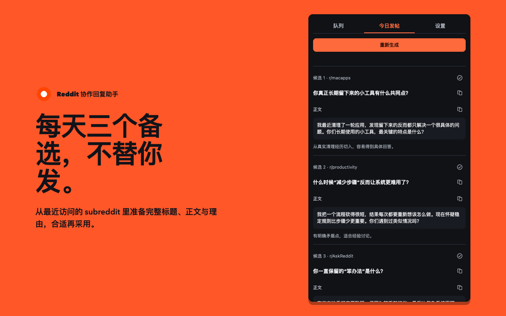
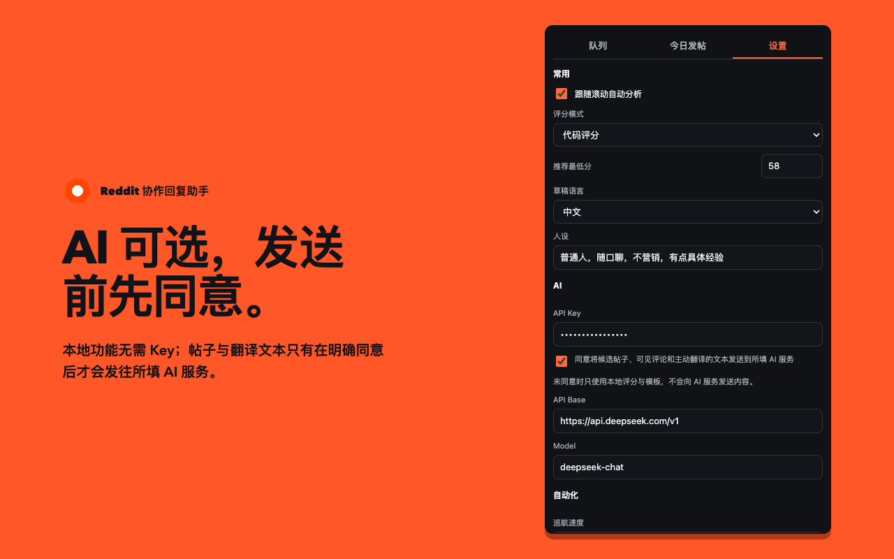

跟着滚动找帖
浏览主页或任意 subreddit 时增量分析新帖，达到阈值才进入推荐；需要时也能开启慢速巡航。
↘它不是替你表态的机器人，而是一个贴着 Reddit 页面工作的中文助手，把发现、理解和起草压缩进同一条浏览路径。
浏览主页或任意 subreddit 时增量分析新帖，达到阈值才进入推荐；需要时也能开启慢速巡航。
↘浮层直接给出中文标题、正文摘要、回复提醒和一个可编辑草稿，不必在多个工具之间来回复制。
译详情页只读取当前已加载的可见评论，归纳已覆盖方向，再提供一个尚未充分表达的角度。
24跳过、暂存、打开和写回复都在当前路径上；新推荐静默进入待办，不打断手头判断。
+评论或发帖编辑器里可把中文自然翻译成英文并回填，原文出错时不会被覆盖，也不会触发发送。
中正常浏览即可开始，不要求固定 subreddit，也不需要把发送权交给扩展。
扩展从当前 Reddit 页面读取已经显示的帖子，先在本地评分。
看中文摘要、已有讨论空间和一个新角度，决定回复、暂存还是跳过。
草稿只会填进空编辑器；你检查、修改，并亲自点击评论或发布。
页内浮层处理当前推荐，侧栏负责待办、每日发帖备选与设置；常驻入口只有一个。



产品边界不是一句免责声明，而是写进实际交互的限制。
写回复只定位并填入空评论框；已有输入不会被覆盖。
巡航需要手动开始，速度可调，可随时停止，不自动点赞或互动。
没有 API Key、没有同意数据发送或 AI 请求失败时，仍可使用本地评分和模板。
设置、Key 和队列保存在浏览器本地；只有在你明确同意后，候选内容和主动翻译文本才会发送到所填 AI 服务。
读取当前可见帖子、已加载评论和最近访问的 subreddit。
保存设置、API Key、队列、处理记录与每日候选。
明确同意后发送必要文本，默认使用 DeepSeek；项目维护者不运营中转服务器。
不会。扩展最多把草稿安全填入空编辑器，最终检查与发送只能由用户完成。
不必须。本地评分、队列与模板不需要 API Key；翻译、AI 摘要、避重新角度和 AI 草稿需要用户自己的 Key，并需要单独同意数据发送。
从 GitHub 发布页下载 Chrome 或 Edge 安装包，解压后在浏览器扩展管理页开启开发者模式，再选择“加载已解压的扩展程序”。
不会。扩展只读取当前页面已经加载且可见的评论，最多 24 条，并在界面显示本次实际参考数量。
扩展以 MIT License 免费开源。AI 功能使用用户自己的 DeepSeek API Key，第三方 API 费用由用户与服务商结算。
不是。本项目是独立的非官方工具，与 Reddit 或 DeepSeek 无隶属、赞助或背书关系。